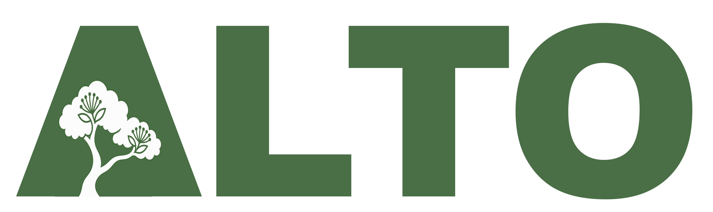

← Return to the Auckland map
Auckland canopy redraw · V5
3,352,851 tree-height crowns and 1,499,603 lower-vegetation candidates across all 3,149 completed survey tiles.
What changed
V5 combines the 2024 laser survey with aerial NDVI to redraw the canopy. One map marker represents each current crown. Source inventories and earlier detections remain separate records, linked through their positions and overlapping crown boundaries.
The new tree layer uses a 3 m height threshold. You can also explore 2–3 m canopy, vegetation below 2 m, and crowns at least 5 m wide. Those lower layers do not contribute to tree service totals.
Keep the history
Every earlier ALTO ID remains available. Older dimensions, foliage profiles, neighbourhood statistics, service scenarios and survey histories are kept in the full record. V4 and v5 redraw the same survey, so a change in the number of crowns does not establish a tree loss, new planting or biological growth.
Areas outside the v5 footprint keep their earlier canopy records. Inside the footprint, earlier detections without a unique new crown can be switched on separately.
Tree identity and notable locations
Records are linked using the actual crown boundary. This is spatial evidence: one crown may contain several trunks or trees. Unverified Council notable-tree points stay at their source locations and are excluded from automatic crown matching.
ALTO retains its stable IDs when Council identifiers change. The source crosswalk records the old and current identifiers. The Devonport Primary plaque report is attached to the observer-selected tree, with the schedule association still marked for confirmation.
Dimensions and estimates
Current profiles and 3D illustrations use the new crown dimensions. Existing service equations are recalculated once per crown representative. Their assumptions, including uncalibrated trunk and carbon coefficients, remain visible. Earlier estimates are available alongside them.
Root extents remain scenarios. The current estimates use crown and estimated trunk size, with known paving where available. Neighbouring crowns are no longer treated as measured boundaries between root systems. Effective root extent remains unknown where paving inputs are missing.
Forecasts start at the current canopy height and reuse the earlier fitted model. Its original benchmark is retained; transfer to the v5 redraw has not yet been validated. Nearby-history weighting awaits refreshed spatial matching. Older observed changes are kept separate from the new starting height.
What still needs checking
The small reference benchmark found fewer splits with v5, but does not establish region-wide detection precision. Large spreading and multi-stem trees can still be split or partly trimmed. A photographed Kermadec pōhutukawa remains a recorded example to investigate.
Summed crown area includes overlaps. It should not be read as land-cover percentage or compared directly with a Council canopy-cover percentage. The board-level cover and historical-change overlays retain their earlier methods and dates.
Three self-intersecting polygons were repaired and four recorded areas were aligned with their saved outlines. These small corrections are logged in the build; the original segmentation files remain intact.
Contribute a measurement
Open KYTE to record photos and observations. A trunk circumference, a clear whole-tree photograph and a confirmed species can help test the estimates. Saved visits keep their original tree IDs.